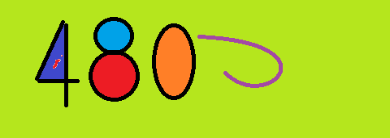

HTML中的图片
HTML中引入SVG代码
HTML 中的自适应图片

根据不同的分辨率，显示不同的图片, 依然是<img>元素， 但是其中的属性，多了srcset 和 sizes
- srcset
- 这个属性定义了我们允许浏览器选择的图像集，以及每个图像的大小。 在每个逗号之前， 我们写：
- 一个文件名
- 一个空格
- 图像的固有宽度（以像素为单位）——注意这里使用的单位为 w ，而不是px
- sizes
- 这个属性定义了一组媒体条件， 并且指明了当某些媒体条件为真时， 什么样的图片尺寸是最佳选择——我们在之前已经讨论了一些提示。 在这种情况下，在每个逗号之前，我们写：
- 一个媒体条件（max-width:480px)——意思是当可视窗口的宽度小于等于480px时
- 一个空格
- 当媒体条件为真时， 图像将填充槽的宽度（440px)